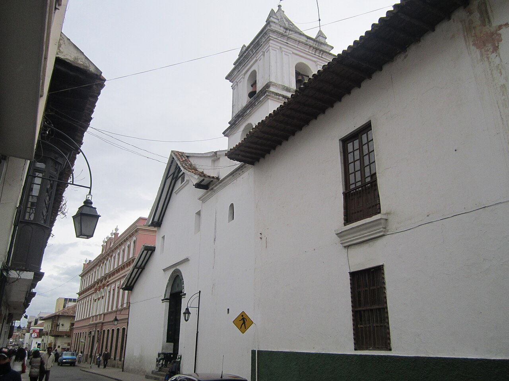

Coloquio sobre conservación de la madera dorada en la Capilla del Rosario
Jornada académica orientada a divulgar los criterios de preservación preventiva de los retablos tallados en cedro y dorados con hojilla de oro del siglo XVII.
Santuario histórico de la Orden de Predicadores en el centro fundacional de Tunja. Su sobria arquitectura exterior de tapia, cal y portada en piedra sillar resguarda tres naves de traza hispano-mudéjar y el conjunto barroco dorado de la Capilla de Nuestra Señora del Rosario.

ORDEN DE PREDICADORES · ARQUIDIÓCESIS DE TUNJA
Establecido el convento dominico en 1551 e iniciada la obra del templo hacia 1556–1560, el edificio conserva la austeridad exterior propia de los templos conventuales neogranadinos del siglo XVI junto con una extraordinaria riqueza ornamental interna.
Su interior se organiza en tres naves separadas por arcos sobre pilares encalados, cubiertas con armaduras de madera de par y nudillo, pinturas murales al temple del siglo XVI y retablos tallados en cedro y recubiertos en hojilla de oro sobre fondos en rojo almagre.

Jornada académica orientada a divulgar los criterios de preservación preventiva de los retablos tallados en cedro y dorados con hojilla de oro del siglo XVII.
Encuentro cultural sobre el origen histórico de la Cofradía de Nuestra Señora del Rosario a finales del siglo XVI y su legado iconográfico en el templo.